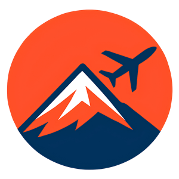

The Freescape ProjectEin Jahr · Ein Rucksack · Ein Kontinent
Alles, was wirklich in unseren Rucksäcken steckt, unterwegs zwischen Anden, Amazonas und Atlantik. Zum Abhaken, Ausdrucken und Anpassen.
Südamerika ist kein Ziel, es sind zwanzig. In derselben Woche stehst du morgens frierend auf 4.800 Metern und schwitzt abends im Dschungel. Unsere Regeln nach einem halben Jahr unterwegs:
Nur Handgepäck. Unsere Rucksäcke haben 40 Liter und passen in die Kabine. Das spart bei jedem Flug Gepäckgebühren, und nichts geht verloren. 40 Liter klingen wenig, reichen aber, versprochen.
Zwiebelprinzip statt Spezialkleidung. Drei dünne Schichten schlagen jede dicke Jacke. Merino trocknet schnell und riecht auch nach Tag drei nicht.
Alles, was du zweimal nicht benutzt hast, fliegt raus. Lieber unterwegs aussortieren oder verschenken, als es monatelang herumzutragen.
Kaufen kannst du fast alles vor Ort. Nur gute Wanderschuhe, Technik und deine Reiseapotheke solltest du von zu Hause mitbringen.
Das findest du in diesem Guide
Ganz am Ende: unsere ehrliche Liste der Dinge, die du getrost zu Hause lassen kannst. Hak beim Packen einfach ab, was im Rucksack liegt.
Dein Zuhause auf dem Rücken. Weniger ist hier wörtlich mehr.
Für alles zwischen Gletscher und Dschungel. Waschen kannst du überall, günstig und kiloweise.
So viel wie nötig, so wenig wie möglich. Steckdosen sind in Bussen Glückssache.
Der Teil, den du nicht vor Ort nachkaufen kannst. Zweimal prüfen.
Apotheken gibt es überall, aber nachts im 18-Stunden-Bus hilft dir nur, was du dabei hast.
Wiegt fast nichts, rettet aber regelmäßig den Tag.
Gut zu wissen
Alles Wichtige doppelt: Passkopien einmal im Hauptrucksack, einmal im Daypack und einmal in der Cloud. Und die zweite Kreditkarte nie am selben Ort wie die erste. Klingt übervorsichtig, bis der Tag kommt, an dem du es brauchst.
Ehrlichkeit gehört dazu: Das hier haben wir eingepackt und bereut.
Die zweite Jeans. Schwer, trocknet nie, und in den Bergen trägst du sie sowieso nicht.
Der dicke Reiseführer. 900 Gramm Papier. Offline-Karten und Blogs (zum Beispiel unserer) reichen völlig.
Schmuck und alles, was glänzt. Du trägst es nicht, und du machst dir nur Sorgen darum.
Das dritte Paar Schuhe für "besondere Anlässe". Der besondere Anlass kam nie.
Zu viel "für alle Fälle". Für fast jeden Fall gibt es in Südamerika einen Laden an der nächsten Ecke.
Jede Reise ist anders. Platz für alles, was auf deiner Liste nicht fehlen darf.
Mehr von unserer Reise
Das alles zeigen wir im Blog und in unseren Vlogs auf YouTube. Such nach The Freescape Project, wir freuen uns auf dich. Und wenn dir diese Liste geholfen hat: Erzähl uns davon, welche drei Dinge du gestrichen hast.